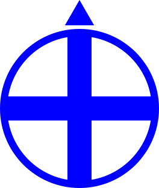
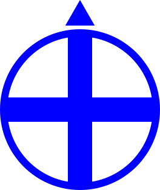

face facexyz4.1
face agent facexyz x y z  

Set the caller's heading and pitch towards agent or towards the point (x,y,z).
If the caller and the target are at the same x and y coordinates the caller's heading will not change. If the caller and the target are also at the same z coordinate the pitch will not change either.